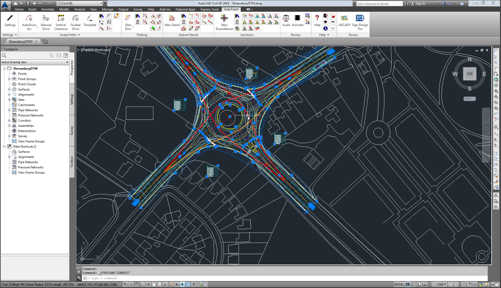

AUTOCAD provides a 2D and 3D platform to sketch professional level drawings that are needed in the construction and manufacturing industries. It provides the basic need to capture ideas while drafting and is an inevitable tool for Architects, Structural engineers, Designers and Manufacture experts. With loads of inbuilt tools, the AUTOCAD can be used to create any and almost all kinds of designs and give them a form with a professional touch.
Why learn AUTOCAD?
Almost all the industries are in need of drawings like the Construction Drawings, MEP and Architectural layouts. With the help of AUTOCAD, one can easily master the skills and proficient themselves to make their path into this industry. Apart from giving wings to your creativity, it helps to open path as a Design Engineer.
Course Overview
Our course is beautifully designed to help even amature understand the concepts with ease.
Backed by a pool of qualified resources that are well adept in leveraging the art of using AUTOCAD, one can easily mould themselves as domain experts. Special classes are allocated for clearing all the doubts. Though most of the concepts of drafting start with 2D concepts, the advance 3D modelling is also covered in the advanced modules to help the students embark a journey of specialist. After completing this course, one can easily tag themselves as domain experts of the famous Autodesk AUTOCAD.
Autocad Mechanical Course Content
Autocad Civil Course Content
